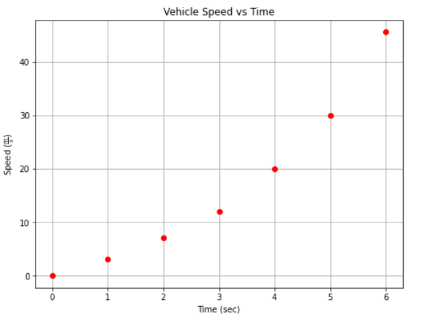
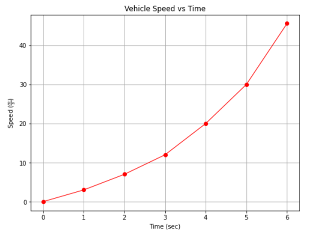
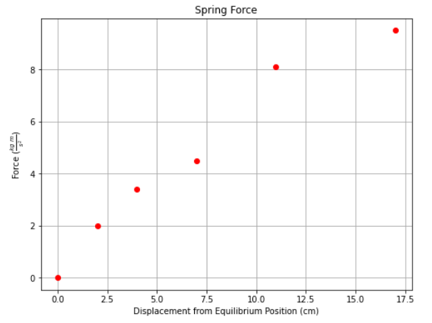
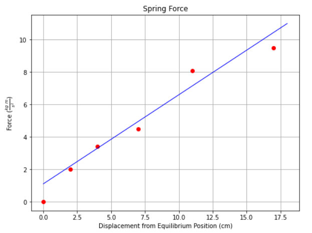
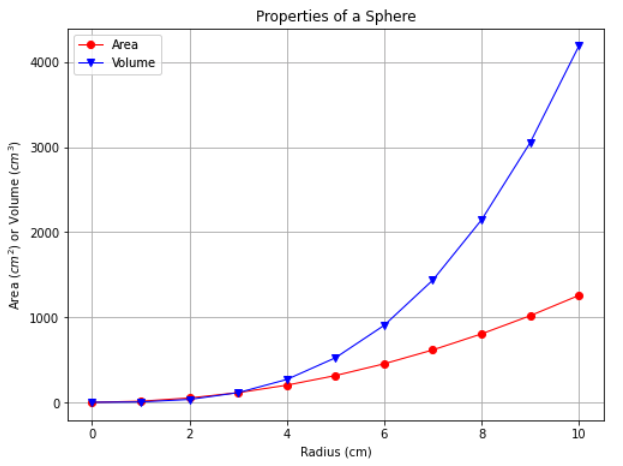

Characteristics of a Good Graph#
Constructing a graph involves more than just plotting data points; the graph must convey information in a clear and unambiguous fashion, and it should have a particular aesthetic. So graphing is both art and science!
Fig. 1 is a plot of some observations of speed and elapsed time. The graph includes a title, and the axes are labeled including the relevant dimensions and/or units. The plotted points are shown on a contrasting background. The points themselves are not connected by any guidelines, a convention used for plotting data in contrast to a data model, which would be plotted as a continuous line (curve).


Fig. 1 A clear, aesthetic graph created for some observed values#
Sometimes it is helpful to join the points with a line segment as in Fig. 2, but by convention, the data points being shown implies these are measured data.


Fig. 2 A clear, aesthetic graph created for some observed values, with guideline segments between the data points#
Fig. 3 is a graph in which the data points represent individual measurements. In such situations, the data points may not define a smooth curve because of small variations or small errors in the in the measurements, or even transcription errors. This lack of “smooth” is called data scatter; it is typical and anticipated.


Fig. 3 A graph showing measured data points#
Warning
Real data should not be smooth, if it appears to be so, the analyst probably is inadvertently plotting model values and not the data.
Measured data points should always be plotted individually, using a symbol for each data point, so that the scatter can be seen clearly as was done in Fig. 3.
Fig. 4 shows the same set of measured data with a trendline passed through the data.


Fig. 4 A trendline (data model) representing a set of measured data points#
Note
The trendline is herein referred to as a data model to convey the idea that it is a model of how data are anticipated to behave. Later in the document we examine many different kinds of data models used to build prediction engines or classification engines to support engineering judgement and design
Multiple Plots on a Single Graph#
Fig. 5 is a plot showing the surface ares and volums of a sphere as a function of the sphere’s radius; hence two different data sets within the smae graph, each shown in a different color, and different marker-type. Notice this chart includes a legend, that communicates to the viewer the identity of each data set.


Fig. 5 A graph showing two different data sets#
Summary
The fundamental features of a good graph are:
Title
Axes labels with units
Grid lines
Different colors, line-type and/or markers for multiple data on same chart
A legend to identify the data set for multiple data or data models on same chart